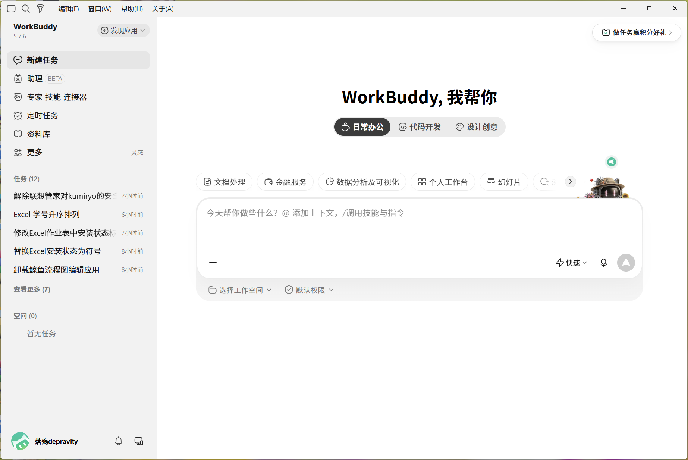
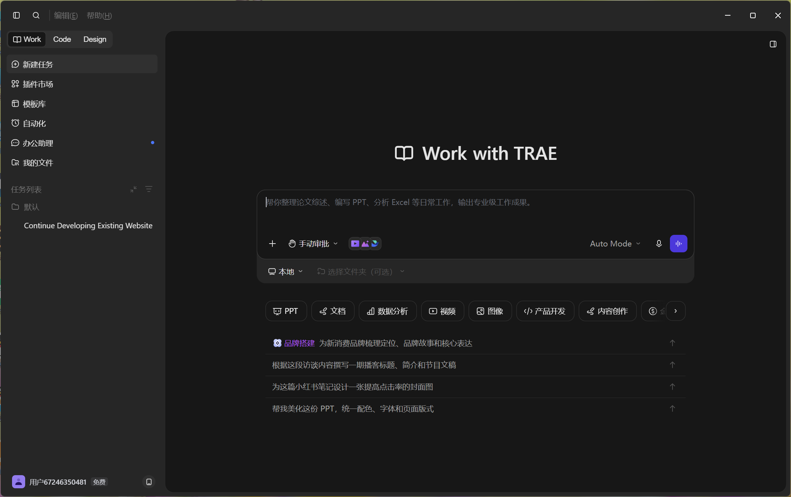
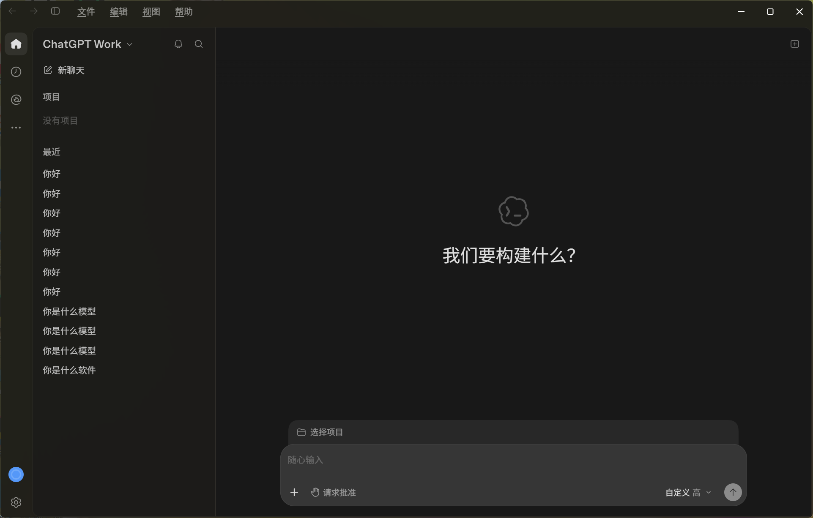

韩哲宇完成的 AI Agent 下载情况记录与展示
本页面记录了 韩哲宇 完成的 ai-agent 项目下载全过程。 从 GitHub 仓库获取项目资源,到本地环境配置与运行验证,每一步都进行了详细的截图记录, 确保整个下载和部署过程清晰可追溯。
下方展示了下载过程中的 3 张关键截图,分别对应不同阶段的操作界面和运行效果。 这些截图真实记录了项目下载后的实际状态,包括界面展示、功能模块和运行效果等多个维度, 完整呈现了 ai-agent 项目的全貌和下载成果。

这是韩哲宇成功下载 ai-agent 项目后首次启动看到的欢迎主界面,软件名为 WorkBuddy, 页面中央醒目标注着「我帮你」三个字,给人亲切友好的第一印象。整个界面采用了深邃的深色主题设计, 背景色调柔和不刺眼,非常适合长时间办公使用,体现了开发者对用户体验的用心考量。
界面左侧是功能导航栏,从上到下依次排列着新建任务、助理、专家技能、定时任务、资料库等核心功能模块, 每个菜单项都配有对应的图标,直观易懂。右侧主区域展示了三大使用场景标签: 日常办公、代码开发、设计创意,用户可以根据自己的需求快速切换到对应的工作模式, 这种分类方式让不同领域的用户都能找到适合自己的入口。
页面底部是对话输入区域,用户可以在这里直接输入问题或指令,与智能助手进行交互。 韩哲宇在下载完成后第一时间截取了这张初始界面图,作为项目成功安装启动的有力证明。 从这张截图可以看出,WorkBuddy 的界面设计简洁专业、功能分区清晰,无论是新手还是有经验的用户 都能快速上手,为后续深入使用打下了良好的基础。

第二张截图展示的是 ai-agent 的核心工作界面——Work with TRAE 对话交互页面。 顶部标题清晰地标明了当前工作模式,整个界面延续了统一的深色主题风格,视觉连贯性很好。 中央区域是主要的对话交互空间,用户可以在这里输入问题、下达指令,与 AI 智能体进行实时对话。
输入框上方设有多种模式选择按钮,用户可以根据任务需求切换不同的工作模式, 比如普通问答模式、代码生成模式、文档写作模式等。左侧保留了功能导航菜单, 方便用户在对话过程中随时切换到其他功能模块。底部的快捷操作栏提供了常用功能的快速入口, 让操作更加高效便捷,减少了用户在不同页面间跳转的时间成本。
韩哲宇在下载项目后,特意进入这个核心对话界面进行了详细查看和测试。 从截图中可以看到,所有交互元素都处于正常可用状态,输入框光标闪烁,按钮样式统一, 整体布局协调美观。这张截图充分展示了 TRAE 作为 AI 工作助手的核心交互形态, 也证明了韩哲宇下载的 ai-agent 项目功能完整、运行正常,具备投入实际使用的条件。

第三张截图记录了 ai-agent 项目中 ChatGPT Work 模块的实际运行状态, 是韩哲宇验证项目功能完整性的重要凭证。界面顶部显示项目名称,左侧是历史对话列表, 可以看到多条对话记录,包括「你好」「你是什么模型」等常见问答内容, 说明用户已经与 AI 进行了多轮互动,对话历史自动保存并以列表形式呈现,方便随时回看和继续。
中央主区域显示着「我们要构建什么？」的引导式提问文字,这种设计非常贴心, 尤其适合新用户快速了解可以用这个工具做什么。底部是对话输入区域, 除了常规的输入框外,还提供了「请求批注」「自定义 英」等高级选项按钮, 说明该工具不仅支持普通对话,还具备批注、自定义输出语言等进阶功能,能够满足更专业的使用需求。
韩哲宇在下载项目后进行了多轮功能测试,这张截图就是其中一次完整交互过程的记录。 从历史对话列表可以看出,AI 能够准确理解用户的问题并给出回应,系统运行稳定流畅。 这充分证明了 ai-agent 项目不仅界面美观,更重要的是功能扎实、交互自然, 韩哲宇的整个下载和验证工作圆满完成,为后续深入学习 AI 智能体技术奠定了坚实基础。
韩哲宇已成功从 GitHub 下载 ai-agent 项目全部资源,文件完整无缺失。
下载过程中保存了 3 张关键截图,详细记录了各阶段的界面状态和运行效果。
对项目的核心功能进行了初步验证,界面展示正常,运行状态良好。
下载的项目资源可作为后续学习 AI 智能体开发的重要参考资料和实践案例。